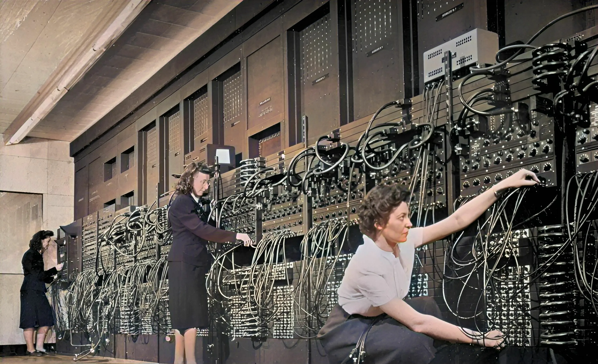
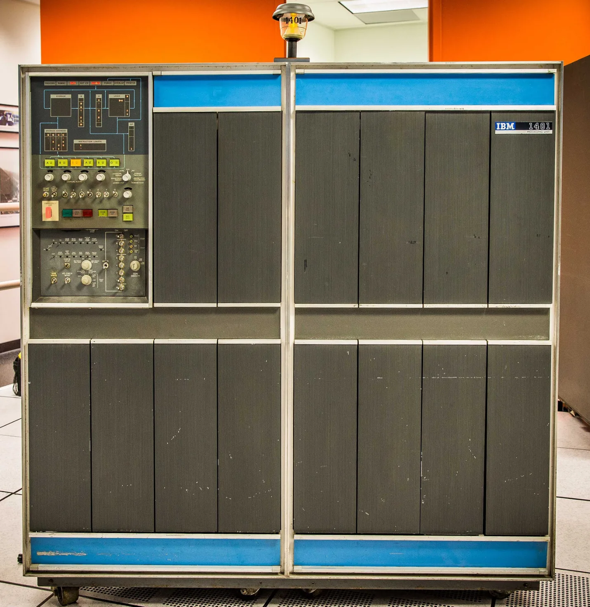
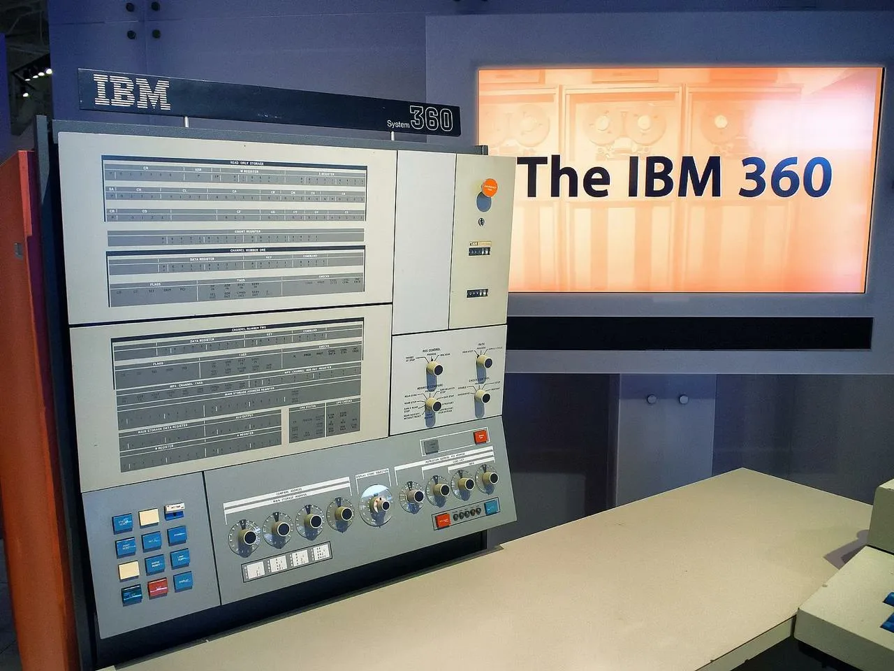

Эволюция компьютеров по поколениям
Первое поколение (1940–1955)
Использовали вакуумные лампы. Примеры: ENIAC (создатели: Джон Мокли и Преспер Эккерт), UNIVAC. Машины были огромными и потребляли много энергии. ENIAC весил 27 тонн.
Второе поколение (1955–1965)
Появление транзисторов. Примеры: IBM 1401, PDP-1. Машины стали быстрее, надёжнее, уменьшился размер и энергопотребление. Создатели IBM 1401: Джон Стиби и команда IBM.
Третье поколение (1965–1975)
Использование интегральных схем. Примеры: IBM System/360. Компьютеры стали массовыми, появилась поддержка языков высокого уровня. Главный разработчик: Фредерик Брукс.
Четвёртое поколение (1975–1990)

Микропроцессоры. Появление персональных компьютеров: Altair 8800, Apple I, IBM PC. Основатели Apple: Стив Джобс и Стив Возняк. Увеличилась доступность компьютеров для широкого круга пользователей.
Пятое поколение (1990–настоящее время)
Современные компьютеры, параллельные вычисления, искусственный интеллект, облачные технологии, мобильные устройства.
Примеры: современные ПК, смартфоны, суперкомпьютеры.